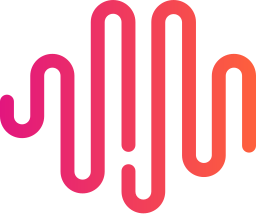

SQLite. One tenant, one file, no server to run. Move to Postgres when you need many writers at once.
Ask all your AIs one question, at once
Roundtable sends your question to Claude, ChatGPT, Gemini, Grok and more. Every answer lands side by side, and Claude, as chair, writes where they agree.
Free and open source. Mac, Windows, Claude Code and the command line.
Consensus
 Claude
Claude ChatGPT
ChatGPT Gemini
Gemini Grok
Grok- GLM

MiniMax
Every answer in one window
Each AI answers on its own card. The chair writes the verdict: what they agree on, and what they still dispute.
Question
Postgres or SQLite for a single-tenant internal tool?
SQLite with WAL mode on. Plan the move to Postgres once writes pass a few per second.
SQLite fits this load. Keep the schema portable so a later move stays cheap.
Postgres. Internal tools grow, and a migration later costs more than the setup now.
Use SQLite with WAL mode. Grok still expects growth, so move to Postgres if writes pass 10 a second.
2 ways to ask a question
Pick one round for fast, independent takes, or let the AIs read each other and revise.
1 round
Quick answers
Each AI answers once, on its own, so the takes stay independent.
Up to 4 rounds
Talk it through
They read each other and revise until the chair says they agree.
- Let them search the web
- Add a file or a link they read first
- Have one AI sharpen your question first
Works with the AI apps you already use
Roundtable first uses the AI apps signed in on your computer, on the plans you already pay for. No app? Paste an API key.
- ClaudeAnthropic
- ChatGPTOpenAI
- GeminiGoogle
- GrokxAI
- GLMZ.AI
- MiniMaxMiniMax
Also Claude Code, Codex, Gemini CLI, Qwen Code, Kimi, OpenCode, Cursor, OpenRouter, Ollama and LM Studio
Install Roundtable
Download the app, or use Roundtable in Claude Code or on the command line.
The app for Mac and Windows
macOS 11 or later, Apple silicon or Intel. Windows 10 or 11, 64-bit. See all releases
In Claude Code
/plugin marketplace add frontier-infra/roundtable
/plugin install roundtable@frontier-infraOn the command line
uv tool install roundtable-shWith the script
curl -fsSL https://roundtable.sh/install.sh | bashRoundtable is free and open source
MIT license. Runs on your own AI plans and keys. No Roundtable account.